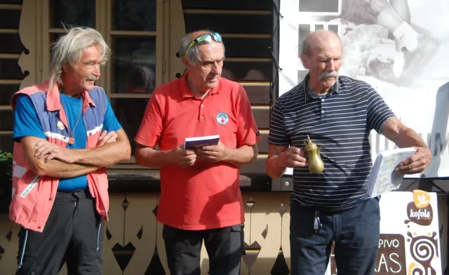

Książka · PDF + audio
Tatry, nosiči a iné živly
Góry, harówka i historie, które muszą żyć! Tatry to nie tylko majestatyczne szczyty i niekończące się doliny. To także historie nosiczów, gospodarzy schronisk, wspinaczy i zwykłych wędrowców.
Przenieś się do świata, w którym na plecach nosi się setki kilogramów, harówka buduje charakter, a endorfiny hulają jak górski wiatr. Odkryj legendarne wyczyny nosiczów, kulisy górskich schronisk oraz zabawne i dramatyczne sytuacje, które kształtują ludzi w górach.
Ta książka jest hołdem dla wszystkich, którzy żyją z górami i dla gór.
Płatność i pobranie plików przez Payhip. Payhip otworzy się w nowym oknie.